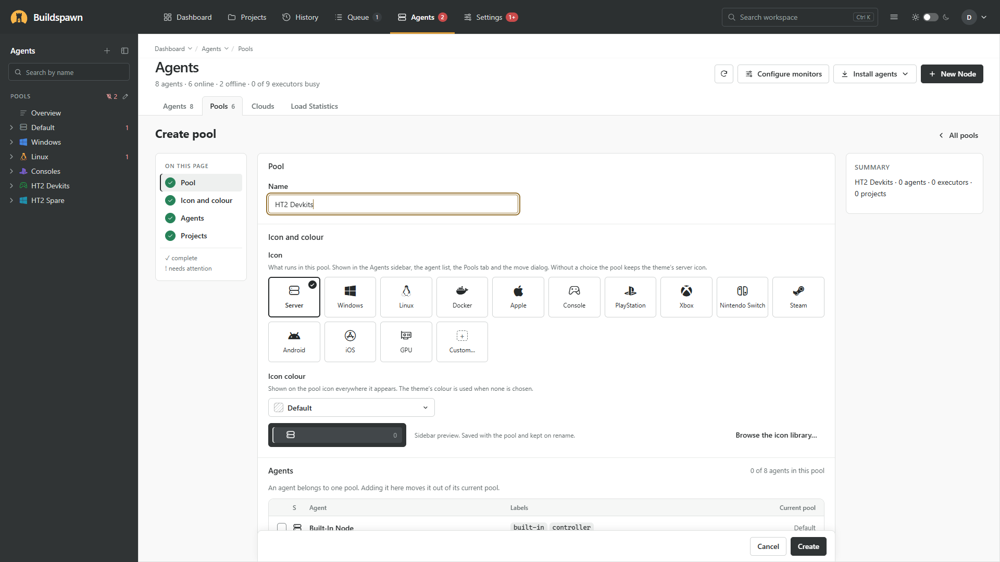
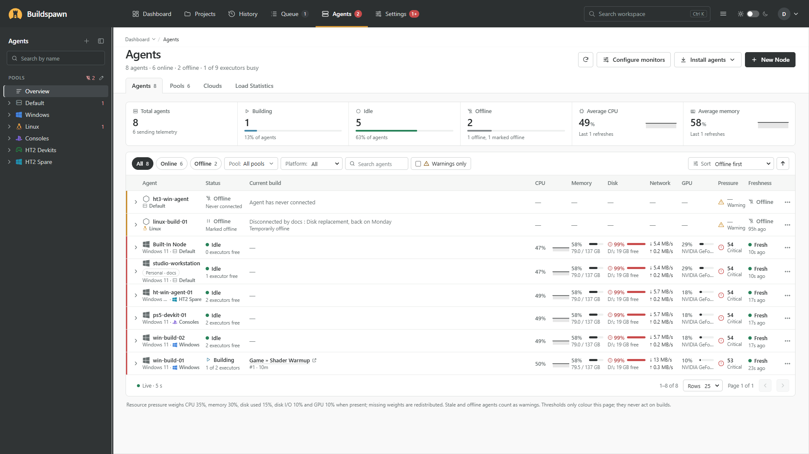
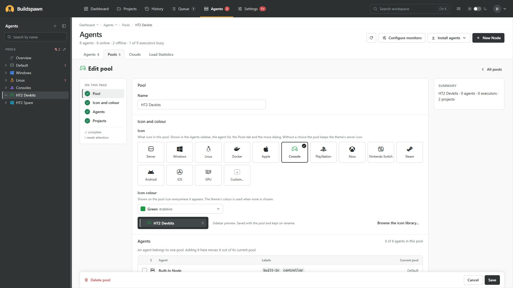

Create a pool for console devkits
Keep console builds on the machines that have the devkits, and keep other builds off them.
Before you start
- You are an administrator.
- The devkit machines are already agents (see Add a Windows build agent).
- You know which build configurations or project folders build for the console.
Steps
- Open Agents, click the Pools tab, then Create pool.
- In Name, type a name that says what the pool builds, for example
HT2 Devkits. - Under Icon, click Console, or the brand icon: PlayStation, Xbox or Nintendo Switch.
- Under Icon colour, pick a colour, for example Green. The Sidebar preview shows how the pool will look.
- Under Agents, tick the devkit machines. The Current pool column says Moves from … for each one: an agent belongs to one pool only.
- Under Projects, type in Add project and pick each console build configuration or folder, for example
How-to » HT2 Devkit Build. A folder adds every build configuration in it. - Click Create.

A pool decides where a build may run. To also pick a particular machine, label the devkit agents (for example ps5 devkit) and set a label expression or an agent requirement on the build configuration. See Labels and agent requirements. Set Number of executors to 1 on a devkit (see Builds at a time).
Check it worked
- The pool appears in the side panel of the Agents pages with its icon and colour. Click the arrow before it to see its agents.
- Run one of the pool's build configurations. Its build page says on and the name of a devkit agent, and the Agents page shows that agent Building.
- To change the pool later, click its name. The Edit pool page has the same settings and Delete pool.


Troubleshooting
| Problem | What to do |
|---|---|
| Console builds wait with Not in a pool assigned to this project. | The build configuration is not in the pool's Projects, or it is also in another pool. Add it, or its folder, on the pool page. |
| Other builds no longer run on the devkits. | That is the point of the pool: its agents run only the pool's projects. To share a machine at night, use a scheduled move. |
| The pool shows no agents ready. | The agents are offline or still in another pool. Open the pool and check Current pool, then the agents' status on the Agents page. |
Next steps
- Pools: how pools work, icons and the sidebar.
- Move agents to another pool every evening.
- Give release builds priority on agents.
- Agent settings.